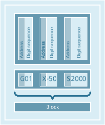

An NC program consists of a sequence of NC blocks. Each block contains the data for executing a step in the workpiece machining.
NC blocks consist of the following components:
Commands (statements) according to DIN 66025
Elements of the NC high-level language
The commands according to DIN 66025 consist of an address character and a digit or sequence of digits representing an arithmetic value.
Address character (address)
The address character (generally a letter) defines the meaning of the command.
Examples:
Address character | Meaning |
G | G command (preparatory function) |
X | Position data for the X axis |
S | Spindle speed |
Digit sequence
The digit sequence is the value assigned to the address character. The sequence of digits can contain a sign and decimal point. The sign always appears between the address letter and the sequence of digits. Positive signs (+) and leading zeros (0) do not have to be specified.
As the command set according to DIN 66025 is no longer adequate for programming complex machining sequences in modern machine tools, it has been extended by the elements of the NC high-level language.
These include, for example:
Commands of the NC high-level language
In contrast to the commands according to DIN 66025, the commands of the NC high-level language consist of several address letters, e.g.
OVR for speed override
SPOS for spindle positioning
Identifiers (defined names) for:
System variables
User-defined variables
Subprograms
Keywords
Jump markers
Macros
| Note |
An identifier must be unique and cannot be used for different objects. |
Comparison operators
Logic operators
Arithmetic functions
Control structures
Commands are either modal or non-modal:
Modal
Modal commands retain their validity with the programmed value (in all following blocks) until:
A new value is programmed under the same command.
A command is programmed that revokes the effect of the previously valid command
Non-modal
Non-modal commands only apply to the block in which they were programmed.
The last block in the execution sequence contains a special word for the end of program: M2, M17 or M30.
See also:
Block rules
Value assignments
Comments
Skipping blocks